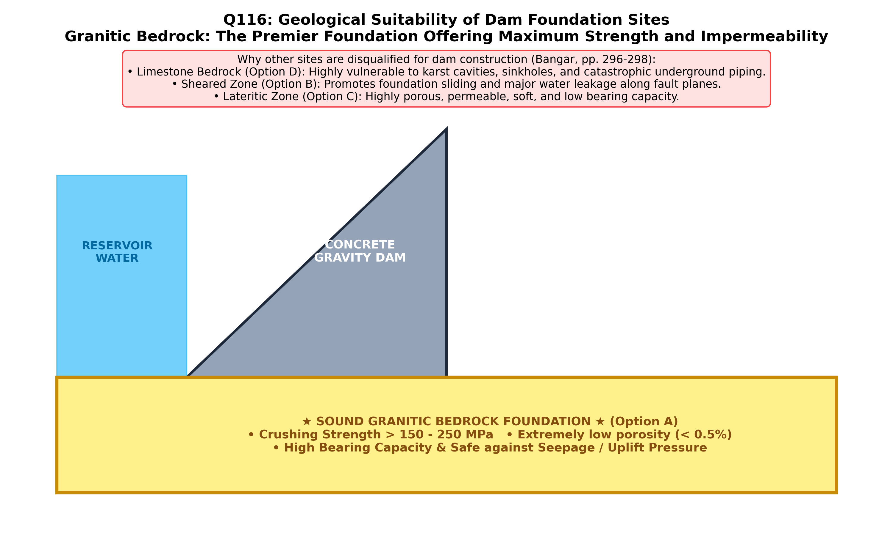

1. Theoretical Foundation: Geological Criteria for Dam Foundations
A major concrete gravity, arch, or embankment dam imposes immense vertical dead loads (up to $3\text{--}6\text{ MPa}$), horizontal reservoir water thrusts, and high hydraulic head gradients on its foundation. An ideal dam site requires bedrock with high unconfined compressive strength (bearing capacity), negligible primary permeability, zero chemical solubility, and high resistance to sliding and erosion. Among the given geological settings, a site with a granitic bedrock (massive plutonic igneous rock) is universally the best site for dam construction:
| Candidate Dam Site Bedrock |
Unconfined Compressive Strength ($\sigma_c$) |
Permeability & Seepage Hazard |
Suitability for Dam Construction |
| SITE WITH GRANITIC BEDROCK (Option A) |
Very High ($100\text{--}250\text{ MPa}$) |
Impervious crystalline fabric ($\phi < 1\%$); chemically insoluble in water |
BEST / IDEAL FOUNDATION: Supports highest concrete gravity and arch dams |
| Site with Good Shear Fractures (Option B) |
Severely reduced along shear planes ($c \to 0$) |
High secondary permeability and piping of fault gouge |
Hazardous: Prone to sliding failure, differential settlement, and leakage |
| Lateritic Zone (Option C) |
Low & variable ($2\text{--}25\text{ MPa}$; softens when saturated) |
Highly porous, vesicular/vermicular cavities; high seepage |
Unsuitable for major masonry/concrete dams; requires deep stripping to fresh rock |
| Site with Limestone Bedrock (Option D) |
Moderate-to-High intact ($50\text{--}120\text{ MPa}$), but cavernous |
Severe karstic solution channels, caverns, and sinkholes ($\text{CaCO}_3$ dissolution) |
Highly problematic: Prone to catastrophic reservoir leakage and foundation collapse |
"
Massive igneous rocks such as granites, syenites, diorites, and gabbros are the strongest and most desirable foundation rocks for any type of dam. Fresh, unweathered granitic bedrock possesses an interlocking crystalline texture with compressive strength far exceeding any load imposed by the tallest dam, is virtually impervious to water, and is completely immune to solution by percolating reservoir water."
— K.M. Bangar, Principles of Engineering Geology (Standard Publishers, Chapter 15: Dams and Reservoirs, p. 302)
2. Why Limestone, Laterite, and Sheared Rock Fail as Ideal Dam Foundations
- Karstic Limestone Hazard (Option D): Carbonic acid in natural water dissolves calcite ($\text{CaCO}_3 + \text{H}_2\text{O} + \text{CO}_2 \rightleftharpoons \text{Ca}^{2+} + 2\text{HCO}_3^-$), enlarging joints into subterranean caverns and solution conduits. Famous engineering disasters/remediations (e.g., Hales Bar Dam, Camarasa Dam, Kopili Dam) occurred because reservoirs built on limestone drained through underground karst networks.
- Shear Fractures Hazard (Option B): Shear zones contain slickensided clay gouge with very low residual friction ($\phi_r \approx 12^\circ\text{--}20^\circ$), creating potential sliding planes beneath the dam heel and toe.
- Lateritic Zone Hazard (Option C): Laterite is a deeply leached tropical residual weathering profile rich in hydrous iron and aluminium oxides with vermicular tubular voids and underlying soft kaolinitic saprolite ("lithomarge" clay) that loses strength upon saturation.

Figure 116.1: Engineering geological evaluation of four candidate dam foundations: (A) Massive Granitic Bedrock (ideal interlocking, high-strength, impervious foundation) vs. hazardous alternatives (B) Sheared fracture zone, (C) Porous lateritic profile, and (D) Cavernous karstic limestone.
Official OPSC 2019 Question & Forensic Option Analysis
Q116. Which of the following could be the best site for a dam construction ?
(A) A site with a granitic bedrock
(B) A site with good shear fractures
(C) Lateritic zone
(D) A site with limestone bedrock
✔ Verified Correct Answer: Option (A) — A site with a granitic bedrock
Forensic Verification: Granite is a holocrystalline, coarse-grained plutonic igneous rock with an interlocking texture of quartz and feldspar. It provides very high crushing strength ($100\text{--}250\text{ MPa}$), high shear resistance, near-zero primary porosity/permeability, and complete insolubility in water. Hence, a site with granitic bedrock is universally the best and safest site for constructing any major dam.
Why this is wrong: Shear fractures represent planes of tectonic rupture with crushed rock and slickensided clay gouge. They drastically lower the shear strength and bearing capacity of the foundation and create pathways for piping and sliding failure.
Why this is wrong: Laterite is a porous, cavernous residual soil/duricrust often underlain by soft, plastic lithomargic clay. It has high permeability, low compressive strength, and undergoes severe settlement under heavy structural loads.
Why this is wrong: Limestone ($\text{CaCO}_3$) is soluble in carbonated water and develops karst topography (solution cavities, sinkholes, and underground channels). Dams built on limestone risk severe reservoir leakage and foundation subsidence unless massive grouting remediation is undertaken.
Synthesis: Engineering Evaluation of Major Indian Dam Foundations
| Major Indian Dam |
River & State |
Foundation Bedrock Lithology |
Geotechnical Characteristics & Treatment |
| Mettur Dam & Krishnarajasagar | Cauvery (TN / Karnataka) | Archaean Granitic Gneiss & Charnockite | Massive crystalline bedrock; exceptional bearing capacity & minimal seepage |
| Hirakud Dam | Mahanadi (Odisha) | Precambrian Granite, Gneiss & Quartzite | Strong granitic/gneissic foundation; local fault/joint zones sealed by grouting |
| Nagarjuna Sagar Dam | Krishna (Telangana/AP) | Archaean Peninsular Granite-Gneiss | World's largest masonry dam supported safely on massive granitic basement |
| Bhakra Dam | Sutlej (Himachal Pradesh) | Siwalik Sandstone alternating with Claystone/Siltstone | Soft claystone seams required deep dental concrete plugging and extensive grouting |
| Kopili Hydroelectric Dam | Kopili (Assam) | Eocene Sylhet Karstic Limestone | Severe karstic caverns and acidic reservoir leakage problems |
High-Yield Practice Problems (8 Exam-Standard Questions)
1. What are the two most common modes of failure of a concrete gravity dam resting on weak bedrock?
Answer: (1) Sliding failure along horizontal bedding or shear planes, and (2) Overturning / Toe crushing due to excessive hydraulic uplift pressure.
Granitic bedrock prevents both by providing high frictional resistance against sliding and high crushing strength at the dam toe.
2. Why is limestone bedrock particularly hazardous for reservoir water retention?
Answer: Because limestone dissolves in weak carbonic acid to form interconnected subterranean karst channels, sinkholes, and caverns that drain the reservoir.
Even if intact limestone cores show high UCS, solution-widened master joints can bypass the dam entirely.
3. If a dam must be built across sedimentary strata, which dip direction of beds is safest for the dam foundation?
Answer: Beds dipping gently upstream ($10^\circ\text{ to }30^\circ$).
Upstream dip directs the resultant load nearly perpendicular to bedding and forces any seepage water to travel downward against the hydraulic gradient, preventing both sliding and leakage.
4. Why are beds dipping gently downstream ($10^\circ\text{--}30^\circ$) the most dangerous configuration for a dam foundation?
Answer: The resultant force of dam weight and water pressure acts parallel to the downstream-dipping bedding planes, promoting sliding failure and downstream water leakage.
The tragic Malpasset Dam failure (1959) and Austin Dam failure involved downstream-dipping foliation/bedding planes.
5. What geological precaution must still be checked when selecting a granitic bedrock site for a dam?
Answer: Depth of spheroidal weathering (kaolinized regolith) and presence of sheet joints (unloading fractures) parallel to the valley slopes.
While fresh granite is ideal, weathered granite (grus) and sheet joints must be excavated to fresh rock and consolidated by blanket grouting.
6. Which type of dam requires the strongest, soundest rock not only in the valley floor but also in the valley walls (abutments)?
Answer: Arch Dam (such as Idukki Dam in Kerala, built on massive charnockitic/granitic gneiss).
An arch dam transfers the majority of reservoir water load laterally by arch action into the canyon abutment walls.
7. What is "piping" in dam foundation engineering?
Answer: Progressive backward internal erosion of soil or fault gouge particles beneath a dam caused by high exit hydraulic gradients ($i_{\text{exit}} \ge i_{\text{crit}}$).
Crystalline granitic bedrock is completely immune to piping erosion.
8. Which type of dam is preferred when the foundation consists of deep, unconsolidated alluvial sand and gravel where solid bedrock is too deep to reach?
Answer: Earthfill or Rockfill Embankment Dam with a wide base and an impervious clay core / cutoff trench.
Embankment dams distribute their weight over a very wide footprint, keeping bearing pressures low enough for soil foundations.